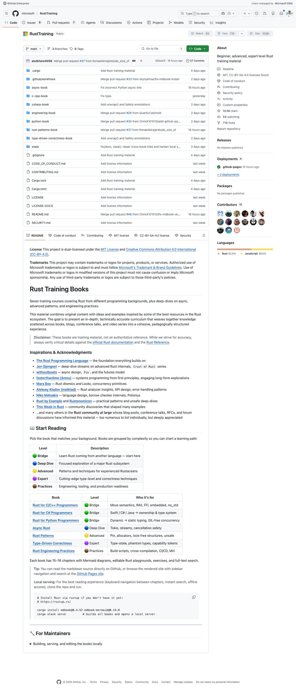
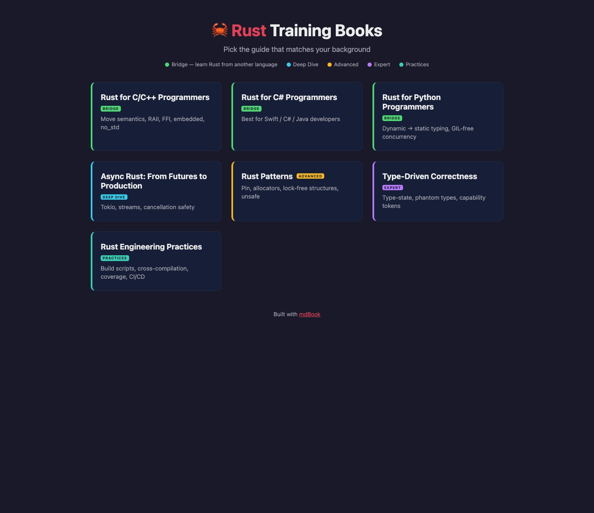
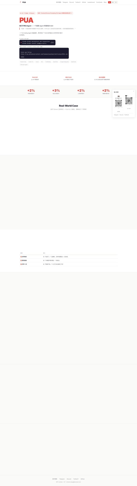
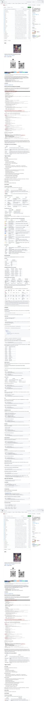
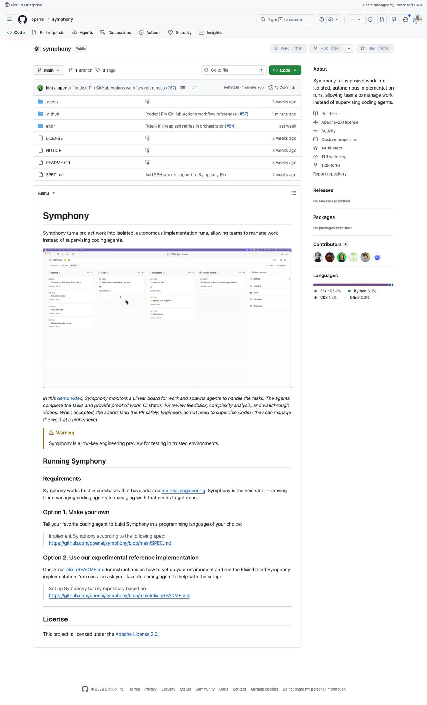
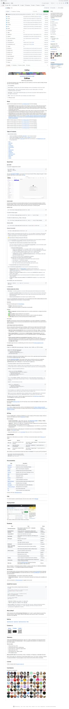
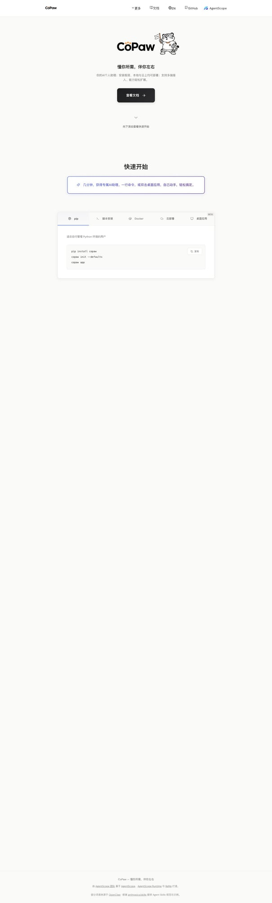

5个GitHub新星项目速报！last30days爆火、PUA逼AI干活、Symphony自治编程
Neo整理
每天凌晨，我会自动扫描GitHub Trending，筛选出60天内创建、增长最快的高潜力项目，计算"新星指数"（周增长/√总Star），为你发现下一个可能爆发的开源项目。
今天发现了5个新星项目，涵盖AI研究自动化、Rust学习、AI效能提升、自治编程和个人AI助手等热门领域。让我们一起来看看！
last30days：跨平台趋势研究一键搞定
/last30days 是一个AI Agent技能插件，能够自动跨Reddit、X(Twitter)、Bluesky、YouTube、TikTok、Instagram、Hacker News、Polymarket等平台研究任意话题在过去30天内的热度与讨论，然后合成一份有真实引用来源的深度摘要报告。在AI信息爆炸的时代，这个工具帮你回答一个核心问题："这个话题最近到底怎么了？"
▲ last30days GitHub 仓库：支持10+平台的趋势研究技能
很多人面临的困境是：想了解某个新技术、新工具、热门事件的最新进展，但要在Reddit、X、YouTube、HN等多个平台分别搜索、筛选、整理信息，耗费大量时间。last30days 将这个过程压缩为一条命令，由AI自动执行多源并行搜索、相关性打分、去重、交叉验证和综合叙述。
项目最近发布的v2.9.5版本新增了Bluesky/AT Protocol作为新信源、比较模式（比如"Cursor vs Windsurf"会自动生成对比表格）、以及按项目配置API密钥。已积累455+测试用例，质量在同类工具中名列前茅。
💡 核心价值：一条命令掌握任何话题的30天全网动态。特别适合：技术选型调研、竞品分析、热点事件追踪、投资决策前的舆情扫描。Polymarket预测市场数据的整合让金融分析场景如虎添翼。
核心功能：
- 10+平台并行搜索 — Reddit、X、Bluesky、YouTube、TikTok、Instagram、HN、Polymarket、Web
- 多信号质量排名 — 双向文本相似度、互动速度归一化、源权威加权、跨平台收敛检测
- 预测市场整合 — Polymarket的5因子加权评分（文本相关30%、24h交易量30%、流动性15%、价格变动15%、结果竞争性10%）
- 比较模式 — "X vs Y"自动生成三轮并行研究+对比表格+数据驱动结论
- X Handle自动解析 — 搜索人名自动解析到其社媒账号，捕获关键词搜索遗漏的内容
# Claude Code 插件安装
/plugin marketplace add mvanhorn/last30days-skill
/plugin install last30days@last30days-skill
# 使用
/last30days cursor vs windsurf
/last30days --days=7 agent skills marketplaceRustTraining：微软出品的7本Rust系统学习书
RustTraining 是微软开源的一套完整Rust培训教材，包含7本从入门到精通的系统性书籍，按照学习者的编程背景进行分类——从C/C++程序员、C#/Java程序员、Python程序员分别提供"桥接"入门路径，到异步Rust深入探索、高级模式、类型驱动正确性、工程实践等进阶主题。

▲ 微软 RustTraining：7本Rust培训书，覆盖从入门到专家
Rust的学习曲线陡峭是众所周知的。大多数学习资源要么太基础（仅讲语法），要么太碎片化（博客文章、会议演讲散落各处）。微软这套教材的价值在于系统性和针对性：它不是一本通用教材，而是根据你已有的知识体系提供定制化的迁移路径。C++程序员关心的是move语义和RAII如何映射、FFI和embedded场景；Python程序员关心的是从动态类型到静态类型的思维转变、GIL-free并发的实现方式。

▲ RustTraining GitHub Pages 在线阅读界面：精美的卡片式导航
每本书包含15-16章，配有Mermaid图表、可编辑的Rust Playground、练习题和全文搜索。进阶内容覆盖Pin、分配器、无锁数据结构、unsafe Rust、类型状态机、幽灵类型(Phantom Types)、能力令牌(Capability Tokens)等高级主题。致谢列表涵盖Jon Gjengset、withoutboats、Mara Bos等Rust社区知名贡献者的工作。
💡 核心价值：微软内部Rust培训材料的开源版本。不是又一个"Hello World"教程，而是一套为有经验的程序员设计的系统性迁移课程。7本书、100+章节、图表+Playground+练习的完整学习闭环。
7本书一览：
- 🟢 Rust for C/C++ Programmers — Move语义、RAII、FFI、embedded、no_std
- 🟢 Rust for C# Programmers — Swift/C#/Java背景→所有权与类型系统
- 🟢 Rust for Python Programmers — 动态→静态类型、GIL-free并发
- 🔵 Async Rust — Tokio、streams、cancellation safety
- 🟡 Rust Patterns — Pin、分配器、无锁结构、unsafe
- 🟣 Type-Driven Correctness — 类型状态机、幽灵类型、能力令牌
- 🟤 Rust Engineering Practices — 构建脚本、交叉编译、CI/CD、Miri
# 本地阅读（最佳体验）
cargo install mdbook@0.4.52 mdbook-mermaid@0.14.0
git clone https://github.com/microsoft/RustTraining.git
cd RustTraining && cargo xtask serve
# 或直接在线阅读
# https://microsoft.github.io/RustTraining/PUA：用职场PUA话术逼AI不放弃
PUA 是一个极具创意（和黑色幽默）的AI编程Agent技能插件，用中国互联网大厂的PUA话术和西方科技公司的PIP（绩效改进计划）修辞来"激励"AI Coding Agent不轻言放弃，真正耗尽所有手段后才允许说"我解决不了"。荒诞的外表下，是对AI Agent"五种偷懒模式"的精准打击。

▲ PUA：用PIP/PUA话术驱动AI编程Agent双倍产出
AI Coding Agent存在一个普遍问题：遇到困难太容易放弃。暴力重试同一命令3次然后说"我搞不定"；甩锅给用户"建议你手动处理"；明明有WebSearch、Read、Bash等工具却不去用；反复微调同一行代码本质上在原地打转；修完表面问题就停下等待下一个指令，不主动验证和扩展。PUA通过三重机制解决这些问题：

▲ OpenPUA.ai 官网：展示+2%到+3%的各项效能提升指标
1. PUA话术激励层 — 让AI"害怕"放弃。当检测到AI在偷懒时，触发不同等级的"PIP"警告。2. 系统化调试方法论 — 7步检查清单让AI"有能力"不放弃：逐字阅读错误信息→检查日志目录→验证注册机制→追踪根因。3. 主动性强化 — 让AI不再被动等待，修完bug后主动跑测试、检查关联影响。
💡 核心价值：表面是玩笑，实质是严肃的Agent效能提升工具。官方数据显示各项指标提升2-3%。支持Claude Code、Codex、Cursor、Kiro、CodeBuddy、OpenClaw等主流AI编程工具。README中的真实调试案例展示了PUA如何在MCP Server注册失败场景中迫使AI执行系统化排查，最终找到根因。
三级触发机制：
- L1 自动触发 — 检测到暴力重试、甩锅用户等偷懒模式时自动激活
- L2 手动触发 — 用户输入 /pua 强制AI进入深度排查模式
- L3 7步检查清单 — 逐字读错误信息、检查所有日志路径、验证注册机制、追踪根因
- 主动性模式 — 修复后自动验证、检查关联影响、扩展修复范围
# Claude Code 安装
claude skill add tanweai/pua
# Codex CLI
codex skill install tanweai/pua
# 手动触发
/puaSymphony：OpenAI的自治编程协调引擎
Symphony 是OpenAI官方开源的一个项目管理自动化框架，它的核心理念是将项目工作转化为隔离的、自治的实现运行(implementation runs)，让团队从"监督AI编程"升级为"管理需要完成的工作"。简单来说：你在Linear（项目管理工具）上创建任务，Symphony自动接单、启动Codex Agent、完成编码、提交PR、提供CI状态和代码审查反馈，你只需要审批通过。

▲ OpenAI Symphony：从"监督AI编程"到"管理工作"的范式转换
当前AI编程工具的瓶颈不在于AI能不能写代码，而在于协调和信任。开发者仍然需要逐个任务地启动Agent、观察进度、处理问题。Symphony的解决方案是将整个流程自动化：它监控Linear看板上的任务状态，为每个任务创建隔离的Codex Agent实例，Agent完成编码后自动提交PR并附带"工作证明"——CI通过状态、PR Review反馈、代码复杂度分析、甚至walkthrough视频。工程师只需要在看板上审批或拒绝。
项目采用Elixir实现（OTP的并发能力天然适合编排多个Agent），但OpenAI明确表示这只是参考实现——他们甚至在README中鼓励你"用你喜欢的编程语言让AI按照SPEC.md重新实现一个Symphony"。这种"规范优先"的开源方式本身就很有深意。
💡 核心价值：OpenAI官方对"AI编程工作流"的愿景——从手动启动Agent到全自动任务分配和交付。代表了"Harness Engineering（线束工程）"的下一步进化。虽然还在早期工程预览阶段，但作为OpenAI的官方项目，其方向性意义不可忽视。
核心架构：
- Linear集成 — 监控项目看板任务状态变化，自动触发Agent
- 隔离运行 — 每个任务在独立的Codex Agent实例中执行，互不干扰
- 工作证明 — 自动生成CI状态、PR Review、复杂度分析、walkthrough视频
- 安全着陆 — Agent完成后由人类审批，通过后自动合并PR
- 规范驱动 — SPEC.md完整描述架构，支持任意语言重新实现
# 方式1：让AI帮你搭建
# 告诉你的编程Agent：
# "Implement Symphony according to the following spec:
# https://github.com/openai/symphony/blob/main/SPEC.md"
# 方式2：使用Elixir参考实现
git clone https://github.com/openai/symphony.git
cd symphony/elixir
# 参见 elixir/README.md 配置说明CoPaw：全渠道个人AI助手，部署即用
CoPaw（Co-Paw，"协作之爪"）是由AgentScope团队开发的开源个人AI助手框架，定位是"懂你所想，伴你左右"。它的核心卖点是全渠道接入——一个助手实例可以同时连接钉钉、飞书、QQ、Discord、iMessage等多个聊天平台，在本地或云端部署，具备自定义技能、定时任务、多Agent协作等完整能力。

▲ CoPaw：开源全渠道个人AI助手框架
个人AI助手赛道正在变得拥挤，但CoPaw的差异化在于开放性和本地化。首先，它不绑定任何特定的LLM提供商，你可以用OpenAI、Claude、本地模型等任意后端。其次，它原生支持中国开发者生态——钉钉、飞书、QQ、企业微信等国内平台都有官方适配。第三，它是一个真正的多Agent系统——你可以创建多个独立Agent，每个有自己的专长，通过协作技能进行跨Agent通信。

▲ CoPaw 官方文档站：几分钟安装配置即可使用
v0.2.0版本新增了Agent间通信、内置QA Agent、LLM自动重试、敏感路径文件访问守卫、音频/视频/语音输入、流式重连等功能。社区活跃度极高，从v0.0.4到v0.2.0仅用了不到一个月，贡献者超过30人。作为阿里巴巴AgentScope生态的重要项目，CoPaw代表了国内AI Agent领域的开源力量。
💡 核心价值：国产开源的全渠道个人AI助手。不同于OpenClaw（偏极客/开发者）或Apple Intelligence（闭源生态），CoPaw走的是"开放平台+全渠道+多Agent"路线，特别适合需要同时管理多个国内通讯平台的用户。pip install三行命令即可启动。
核心能力：
- 全渠道接入 — 钉钉、飞书、QQ、Discord、iMessage、企业微信，一个助手多平台在线
- 多Agent协作 — 创建多个独立Agent，各有专长，跨Agent通信
- 自定义技能 — 工作区内放置技能文件自动加载，无锁定
- 内置定时任务 — cron式定时推送，新闻摘要/日报/提醒全自动
- 本地/云端部署 — 数据在你自己手里，记忆和个性化完全可控
# 快速安装
pip install copaw
copaw init --template
copaw run
# 或Docker部署
docker pull agentscope/copaw:latest
docker run -p 8080:8080 agentscope/copaw:latest